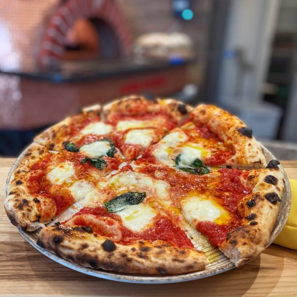

How to cook Neapolitan Pizza

Brief origin story of the Neapolitan Pizza
Neapolitan Pizza is typically prepared in the italian city of Naples. It's
distinct characteristics are a soft, thin dough with high edges.
Tomatoes used are usually grown on the volcanic plains to the south of
Mount Vesuvius. The cheese is traditionally
mozzarella di bufala campana or fior di latte di Agerola.
The art of making this pizza is included on UNESCO's list of intangible
cultural heritage.
Ingredients
- 00 flour
- Water
- Olive oil
- Salt
- Sugar (yes, sugar!)
- Brewer's yeast
- Tomatoes
- Fior di latte
- Parmesan cheese
- Basil
Steps
-
To make the dough, pour water into a container, add salt and sugar. Stir
until they are dissolved and pour more than half of the flour. Put some
yeast in one hand and some flour in the other.
-
Crumble the yeast in your hand and slowly pour it in the container while
you are stirring with the other hand to make sure the flour absorbs all
the water.
- Add more flour and keep kneading.
- Pour the oil and keep kneading until it is absorbed.
-
Transfer the dough in a flat surface and knead with two hand for about
20-25 minutes. Make a ball out of the dough and cover it. Leave it to
rest for 15 minutes.
-
Knead it again for a couple of minutes and leave it to rest again for
about 40 minutes.
-
Cut the dough in half. Take one half and divide it further to make a
little ball. The weight sould be approximately of about 250-260g.
-
Take all the balls of dough, cover them and leave them to rest at
18-24°C for 8-12 hours.
-
Put the tomatoes in a bowl and crush them with one hand, pour some salt
and olive oil. Add some broken basil leaves.
-
Take the fiordilatte and cut it in half, cut it further to make little,
long slices.
- Start heating the oven 30-40 minutes in advance.
-
Press the dough from top to bottom to flatten it, do it three times.
- Turn it upside down and do the same thing.
-
Flatten the dough and when it's flat pour some tomato sauce on top with
a spiraling motion starting from the center. Do not cover the edges.
- Add fiordilatte, but not too much. Add a few basil leaves.
-
Put it carefully in the pizza peel and put it in the oven for 5-7
minutes.
- Serve the pizza.
Back to the Recipes Book